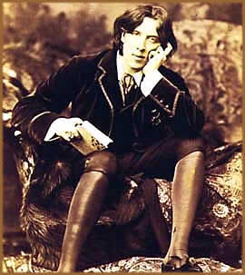
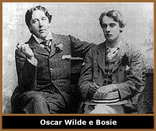
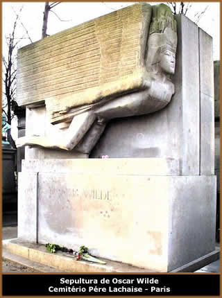

Oscar Fingall O'Flahertie Wills
Wilde nasceu em 16 de outubro de 1854, na cidade de Dublin, capital
da Irlanda. Filho de Sir William Wilde, médico dado a aventuras
amorosas que teve a carreira prejudicada por escândalos,
falecido em 1876, e de Jane Francesca Elgee, escritora de versos
patrióticos com o pseudônimo de Speranza e ativista
do movimento da Independência Irlandesa, Oscar Wilde, desde
sua infância, via-se cercado por grandes ícones,
intelectuais da política e pensadores da arte. Fato que
com certeza contribuiu muito para seu desenvolvimento pessoal.
Criado sobre os alicerces do Protestantismo, em
1865, ingressou na "Royal School de Enniskillem", onde
era um aluno excepcional, principalmente em relação
aos estudos das grandes obras clássicas gregas e seu alto
nível de conhecimento em idiomas. Nesta época, o
infante Oscar sofre com a morte da irmã mais velha Emily,
vítima de uma febre súbita. Em 1874, no "Trinity
College", ganhou a medalha de ouro de Berkeley por seu trabalho
sobre os poetas helenos e em seguida uma bolsa de estudos para
o "Magdalene College de Oxford".
Em
1876, em seu novo colégio, recebe prêmio em literatura
grega e latina. No mesmo ano, publica sua primeira poesia, O
coro das virgens nuvens, uma versão de uma passagem
de As nuvens de Aristófanes. Antes de deixar a
instituição de Oxford em 1878, ganhou o prêmio
"Newdigate" com o poema intitulado Ravena.
Em 1880, publica Vera, um texto teatral em cinco atos
que foi bem aceito pela crítica, e Os Niilistas,
sobre o niilismo na Rússia.
No ano de 1882, Oscar Wilde foi convidado a visitar
os Estados Unidos e palestrar sobre seu recém criado Movimento
Estético, baseado na defesa do "Belo" como solução
única de todos os fatores que denegriram a sociedade industrial.
Este movimento artístico, que contou com a adesão
dos novos intelectuais e pensadores britânicos, tinha por
objetivo transformar os conceitos do tradicionalismo vitoriano,
atribuindo um caráter vanguardista às artes. Oscar
descreveu-o procurando atribuir-lhe um fundamento histórico.
No ano seguinte, vai à Paris e conhece o
mundo literário francês. Se por um lado esta viagem
enfraqueceu o desenvolvimento de seu movimento artístico
a ponto de abandoná-lo; por outro lado, teve a oportunidade
de aprofundar seu convívio social e artístico entre
os franceses. Neste mesmo ano conclui A duquesa de Pádua,
além de Salomé, que chegou a ter a interpretação
de Sarah Bernhardt.
Em seguida, retorna para a Inglaterra e casa-se
com Constance Lloyd, filha de um advogado renomado de Dublin.
O casal muda-se para a Chelsea, local conhecido por abrigar artistas
e intelectuais, e em 1885, nasce o primeiro filho, chamado Cyril.
No ano seguinte nasce Vyvyan.
Mesmo após o matrimônio, Oscar não
abandona as rodas literárias e sua presença continua
sendo muito solicitada, mesmo em eventos sociais. A imagem do
homem elegante, esguio e glamouroso, era uma referência
por onde transitava e atraia muitos olhares. Vestia-se de forma
sofisticada e ao mesmo tempo extravagante, usando acessórios
que, segundo ele, refletiam o que de mais intimo existia em sua
alma.
Entre os anos de 1887 e 1888, várias obras
foram publicadas. Entre elas, O príncipe feliz
e O Fantasma de Canterville, que se tornariam referências
de sua carreira literária. Entretanto, neste momento, apesar
de trazem uma certa carga de amargura pessoal, estas obras foram
consideradas excessivamente fantasiosas, sendo até mesmo
comparadas com "contos de fadas". Até 1889, atua
como editor no "The woman's world".
Mas em 1891, Oscar lançou sua obra maior:
O Retrato de Doryan Gray. Esta obra, que aborda a decadência
moral humana, colocaria o escritor no patamar dos maiores autores
da literatura inglesa. Também publica A alma do homem
(sobre o socialismo) Intentions, Lord Arthu Savile's
Crime and Other Stories e A house of Pomegranates.
Até meados da década de 1890, sua produção
literária e teatral lhe renderam fama e bons lucros. O
Leque de Lady Windermere, Um Marido Ideal e A
importância de ser prudente são referências
deste período.
No entanto, ao mesmo tempo em que conquistou respeito
e notoriedade literária, além de uma situação
financeira confortável, também surgiram sérios
problemas pessoais. Até aquele momento, Oscar era apenas
uma personalidade audaciosa da sociedade aristocrática
britânica. Havia diversos rumores sobre sua conduta pessoal,
inclusive sobre uma suposta homossexualidade, envolvendo-se com
garotos de programa, que era considerada crime e severamente punida
pelos tribunais.
Em
1891, conhece Lord Alfred Douglas (16 anos mais novo e conhecido
como Bosie) e ambos envolvem-se afetivamente. O pai de Lord Alfred,
Marquês de Queensberry, ciente do envolvimento do filho
com o escritor, envia uma carta a Oscar, ofendendo-o e recriminando
a relação entre eles. Na carta, o Marquês
cita ironicamente: "A Oscar Wilde, conhecido sodomita".
Oscar, por sua vez, incentivado por Lord Alfred, decide processar
judicialmente, por difamação, o Marquês.
Após o processo iniciado, o escritor percebe
o poder econômico e influência política do
Marquês. Por isso, tenta retroceder e retirar o processo.
Mas, devido ao número e consistência das provas apresentadas,
um novo processo é iniciado; desta vez contra o próprio
autor. Uma carta de Oscar para o Lord Alfred, de janeiro de 1893,
vem à tona e é utilizada no processo que se desenrolava.
Iniciam-se os processos no tribunal de Old Bailey.
Em 11 de abril de 1895, Oscar é preso provisoriamente,
por crime inafiançável. Em 3 de maio, na ausência
de uma decisão do Júri, é concedida a liberdade
sob fiança. Seus amigos preparam-lhe uma fuga para a França.
Ele, porém, prefere entregar-se à fatalidade. Wilde
volta a comparecer ao tribunal em 7 de maio. Posto novamente em
liberdade, refugia-se na casa do irmão William. Em 20 de
maio inicia-se a fase de revisão do processo. Cinco dias
depois, Wilde é condenado à pena máxima:
dois anos de prisão com trabalhos forçados. Em 27
de maio, Wilde é conduzido à Prisão de Pentoville,
de onde passa, dias depois, à de Wandsworth. Em 13 de novembro
é transferido para a prisão de Reading, onde ficaria
até o fim da sentença.
Após este fato suas obras são recolhidas
das livrarias e suas peças retiradas de cartaz. Os bens
que lhe restam são leiloados para cobrir despesas do processo
judicial. Neste momento, finda seu período literário
mais produtivo, que ocorreu entre 1887 e 1895.
Mesmo atravessando tal turbulência, escreve
A Balada do Cárcere de Reading, baseado na execução
do ex-sargento Charles T. Woolridge, dentro da Prisão de
Reading, e De Profundis, uma longa carta destinada à
Lord Douglas.
Oscar era o preso C-33 no presídio de Reading.
Na madrugada de 3 de fevereiro de 1896, no período que
estava cumprindo a sentença, alegou ter tido uma visão
de sua mãe. "Eu a convidei para sentar, mas ela
só balançou a cabeça", disse o
escritor. Na manhã seguinte, recebe a notícia do
falecimento de sua mãe.
Após ser libertado em 19 de maio de 1897,
vai para a França e adota o pseudônimo Sebastian
Melmouth. Este nome foi utilizado para abrir o registro no Hotel
d’Alsace, local onde passou a maior parte de seus últimos
dias. Ainda, mantém um contato distante com Lord Alfred
Douglas. Porém, a mãe do Lord ameaça interromper
sua mesada caso não afastasse-se do autor. Lord Alfred
aceita sob a condição de que sua mãe continue
enviando dinheiro a Oscar.
Após esse período conturbando, envolvendo
as acusações, processos jurídicos, condenação
e declínio moral e financeiro, Oscar conhece a face mais
rude da pobreza. Passa a maior parte do tempo em quartos de hotéis
baratos destruindo-se através do absinto. Envergonhados
pelo destino do pai, os filhos de Oscar, os quais nunca mais os
veria, chegam a trocar de nome. Sua esposa morre em 1899.
Na
manhã do dia 30 de novembro de 1900, às 9h50, em
um quarto chulo de um hotel parisiense, falece vítima de
um ataque de meningite (agravado pelo álcool e pela sífilis)
e de uma infecção no ouvido conhecida por cholesteotoma.
Inicialmente, seu corpo foi sepultado num pequeno cemitério
de Bagneux. Em seu enterro, compareceram apenas o amigo pessoal
Robert Boss, que chegou a fazer divulgação dos manuscritos
do autor, e Lord Alfred Douglas, que arcou com as despesas do
funeral. Posteriormente, o corpo de Oscar Wilde foi transferido
para o cemitério Père Lachaise, onde repousa até
hoje.
Após a morte de Oscar, Lord Alfred Douglas
aparentou muito sofrimento, mas converteu-se ao catolicismo e
casou-se. Este matrimônio, apesar de render um filho, não
durou muito tempo e, devido à vida pregressa com Oscar,
Alfred não pôde manter a guarda dos filhos. Em seu
livro de memórias, Without Apology (Sem desculpas),
escrito em 1938, fica evidente que Lord não esqueceu do
escritor. Em 1945, falece Lord Alfred Douglas. Neste mesmo ano,
O Retrato de Doryan Gray, ganha uma versão cinematográfica
nos Estados Unidos, sob a direção de Albert Lewin.
Amado por uns e repudiado por outros, a figura
e a obra de Oscar Wilde são realmente dignas de admiração.
Durante sua vida, rumores criados em torno da suposta vida irregular,
atribuiu à sua imagem um encantamento e atração
ainda maiores. Até mesmo a data de seu nascimento é
alvo de controvérsia. Há historiadores que afirmam
que o dia do nascimento seria realmente em 15 de outubro de 1855
ou 1856. De qualquer forma, a data do nascimento de Oscar Wilde
é irrelevante perante sua obra.
Pode-se supor que a má fama prejudicou sua
carreira literária. Mas seus admiradores afirmam o contrário:
Oscar Wilde trazia a perfeita combinação de petulância
e doçura. Em seus 46 anos de vida, o escritor rompeu as
fronteiras do óbvio e tornou-se uma das maiores referências
da literatura e do intelectualismo do século XIX. Autor
de célebres aforismos e dono de pensamentos além
de seu tempo, Oscar chegou a ter três peças em cartaz
simultaneamente nos teatros ingleses; fato raro até os
dias de hoje.
Além da inteligência,
seu destaque também era obtido devido à personalidade
forte, altiva, por vezes arrogante e anticonvencional; considerando-se,
principalmente, o rigor da conduta moral da sociedade do século
XIX.
Por Spectrum
Obras
Disponíveis:
Contos (Downloads)